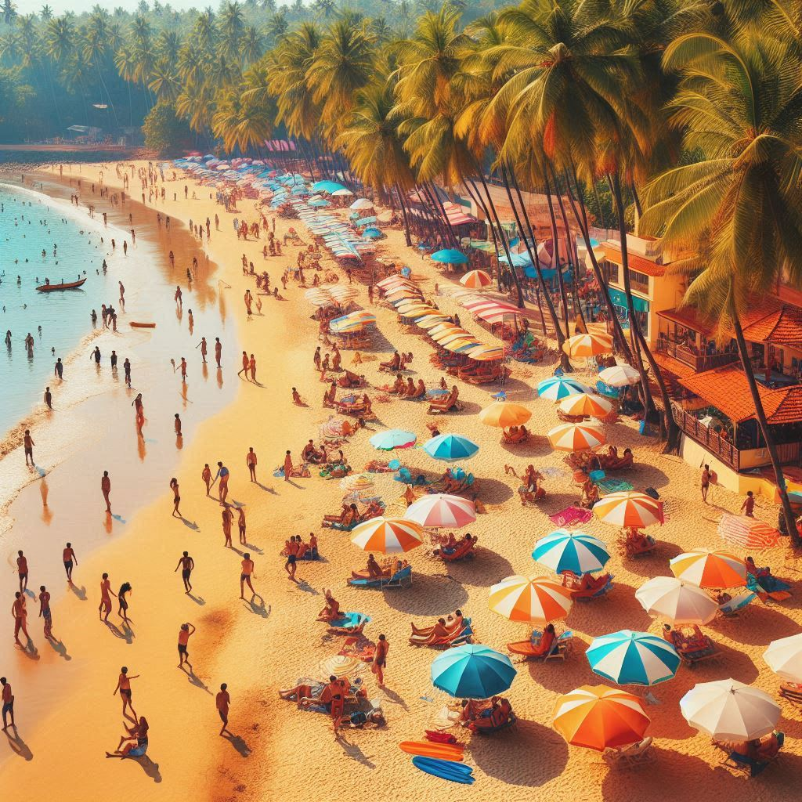
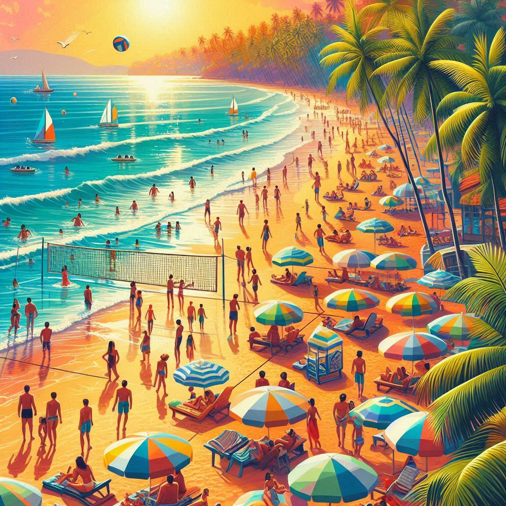

Goa is one of India’s top tourist destinations, known for its scenic beaches, vibrant culture, Portuguese heritage, and diverse tourism offerings. It attracts millions of visitors each year, both domestic and international, seeking a mix of relaxation, adventure, and cultural experiences. Here's an overview of Goa's tourism:
1. Beaches
- Sun, Sand, and Sea: Goa’s long coastline along the Arabian Sea features some of the most beautiful and lively beaches in India. Popular beaches in North Goa include Baga, Calangute, Anjuna, Vagator, and Candolim, known for their vibrant nightlife, water sports, and beach shacks. In South Goa, Palolem, Colva, Benaulim, and Agonda offer a more tranquil, serene beach experience.
- Beach Activities: Tourists can enjoy sunbathing, water sports like parasailing, jet-skiing, windsurfing, banana boat rides, and beach parties.
2. Historical Monuments and Churches
- Portuguese Architecture: Goa’s colonial past is evident in its stunning churches and buildings, many of which are UNESCO World Heritage Sites. Key attractions include:
- Basilica of Bom Jesus: Famous for housing the mortal remains of St. Francis Xavier.
- Se Cathedral: One of the largest churches in Asia.
- Church of St. Francis of Assisi, Church of Our Lady of Immaculate Conception, and Chapel of St. Catherine: These are a testament to the region's architectural grandeur.
- Forts: Goa is home to numerous forts, such as Fort Aguada, Chapora Fort, Reis Magos Fort, and Cabo de Rama Fort, offering breathtaking views of the Arabian Sea.
3. Cultural Festivals and Nightlife
- Goa Carnival: A vibrant celebration featuring parades, music, dance, and food, reflecting its Portuguese heritage.
- Shigmo Festival: A spring festival celebrated with folk dances, traditional costumes, and street parades.
- Nightlife: Goa is known for its energetic nightlife, with numerous clubs, beach shacks, bars, and casinos. Areas like Baga, Calangute, and Anjuna are popular for night parties and events.
4. Waterfalls and Natural Beauty
- Dudhsagar Waterfalls: Among India’s tallest waterfalls, located on the Goa-Karnataka border, offers a mesmerizing view, especially during the monsoon.
- Wildlife Sanctuaries: Nature enthusiasts can explore Bhagwan Mahavir Wildlife Sanctuary, Bondla Wildlife Sanctuary, and Salim Ali Bird Sanctuary to experience the state’s rich biodiversity.
5. Adventure Tourism
- Water Sports: Goa offers activities like scuba diving, snorkeling, windsurfing, kayaking, and deep-sea fishing. Grande Island is a popular spot for diving and exploring marine life.
- Trekking: Treks through the Western Ghats and nature trails in wildlife sanctuaries provide a different adventure experience for visitors.


6. Spice Plantations
- Visitors can tour spice plantations around Ponda and learn about the cultivation of spices like cardamom, pepper, and nutmeg. These tours often include traditional Goan meals and offer a glimpse into the agricultural heritage of the state.
7. Cuisine and Culinary Tourism
- Food: Goa’s cuisine is a blend of Portuguese and Indian flavors, featuring dishes like vindaloo, fish curry, xacuti, and bebinca. Seafood is a staple, and the state is known for its feni, a local alcoholic drink made from cashew or coconut.
8. Cultural and Heritage Tourism
- Old Goa: Visitors can explore Old Goa's historic buildings, including ancient churches and cathedrals.
- Markets: Markets like the Anjuna Flea Market, Mapusa Market, and Saturday Night Market in Arpora offer a mix of souvenirs, handicrafts, clothing, and local food.
9. Yoga and Wellness Tourism
- Goa offers numerous yoga retreats, wellness centers, and Ayurvedic spas that attract tourists seeking health, relaxation, and spiritual rejuvenation.
10. Cruises and River Tourism
- River Cruises: Visitors can enjoy scenic cruises along the Mandovi River, offering music, dance, and dining experiences.
- Houseboats: Goa offers houseboat stays along its tranquil backwaters for a unique experience.
Conclusion
Goa’s tourism offers something for everyone—whether it’s history, beaches, culture, nightlife, or adventure. Its unique blend of Indian and Portuguese heritage, natural beauty, and warm hospitality make it a premier travel destination, drawing travelers seeking diverse and unforgettable experiences.